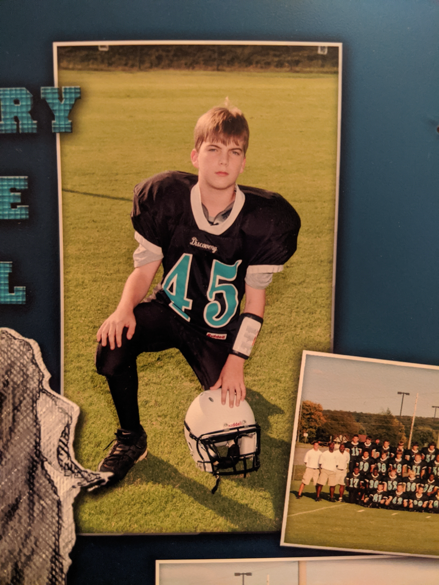

Hey, Young Ryan
A helpful conversation
Hey Ryan, how's it going?
I'm okay.

You look like you have a lot on your mind.
I mean... I guess I do...
Do you want to talk about it?
I don't know. I've never really tried talking about it before.
Cause like, you don't want to? Or something else?
Umm. I don't know. I guess because nobody asks.
Ah okay. So it's like... There's stuff on your mind, and you might talk about it if anybody asked, but nobody really asks or seems like they want to talk to you about it. So you just... keep it to yourself.
Yeah.
Okay. Well, I'd like to hear about it. So if you're comfortable talking about it with me, what's on your mind?
Well... I guess just a lot of stuff. I feel like I'm always thinking about things and I can't ever stop thinking about things.
What kinds of things?
Umm. Just like... like sometimes I google things I want to learn more about.
Okay, so you're curious and you want to learn. What sorts of things do you google to learn more about?
Like in school we're talking about the history of religions and we're learning about the Catholic church selling indulgences, and I want to learn more about what was going on there.
Okay. So you hear about that in school, and you are curious to learn more, so you go research it.
Yeah. Well I mean, I try to research it. But then I get confused because there are so many different answers.
Different answers?
Yeah like, protestants talk about how bad it was, but then I talk to Catholics on a forum and they get mad at me and tell me I'm asking stupid questions and they don't want to bother talking to someone asking stupid questions.
Ah okay. So you're curious about this thing from history because it seems important, and then when you google it you find confusing answers, and then when you try to get clarity people get mad at you. They don't like you being curious.
Yeah exactly! Like, I'm just trying to learn, but they think I'm being like... a jerk.
What do they think you're really doing?
I guess they think that I'm like, trying to poke at a sore spot. They think I'm trying to make them feel bad. But I'm not! I'm really just asking!
It sounds like this is something you're really curious about.
Well yeah. Because like... I'm a protestant, so I want to understand my history. I want to know where my religion came from.
Okay gotcha. So you're a protestant, and in school you learned that the beginning of protestantism had something to do with this indulgences situation. And you're a curious guy, so naturally you want to learn more.
Yeah... Like, I don't think it's a big deal for me to ask questions. But like...
You don't think it's a big deal to ask questions, but maybe not everyone else sees it that way?
Yeah.
Cause like, in this situation you're just asking some simple questions and trying to learn more. But other people get mad at you and treat you like you're causing a problem.
Yeah. But I'm not trying to do that! I'm not trying to be a problem for anybody. I wish people didn't assume that about me.
So people are assuming things about why you're asking questions, but you wish they would see that you really are just asking because you're curious.
Yeah.
Gotcha. That all makes a lot of sense. So, what other sorts of things do you google when you're curious?
Well... another is like, this thing called "near death experiences." And some people just call them NDEs.
Okay, so you're curious about NDEs.
Yeah cause it's just like, so interesting. Like, people who say they experienced things while unconscious or almost dead.
What do you find interesting about these things?
It just seems like... Like if this stuff is true, it totally changes everything right?
Okay. So it feels like these things would be really important if they are true. So you are curious to learn more.
Yeah. It's hard to know if they are true, and some of them sound made up, but also some of them sound pretty real. Some of them are really famous.
It sounds like you're really interested in what it would mean if these things are true, but you're also not wanting to believe things that aren't true.
Yeah. Like, I worry about people thinking I'm stupid for believing something fake.
Oh okay, gotcha. So you're really curious and you kind of want it to be true, but also you are worried about how you would look if you believe it and it eventually turns out to not be true.
Yeah. I just don't want anyone to think I'm being gullible. Because I'm not. I'm thinking really really hard about things. I'm thinking about all the possibilities and all the angles all the time. I am always, always thinking about this stuff. I can't turn it off.
Okay totally, so it's like--you are super careful and thorough in how you think about stuff, but you are worried about situations where other people think you are being stupid or lazy or gullible.
Yeah exactly!
Because that's kind of how it went when you googled indulgences too. You were asking real questions and being careful and thoughtful, but people assumed you were being gullible or lazy or something. And the same feeling is here when you think about believing a near-death experience that turns out to be false.
Exactly! I don't want anyone to think I'm dumb. I hate it when people think I'm being dumb even when I'm not.
[...]